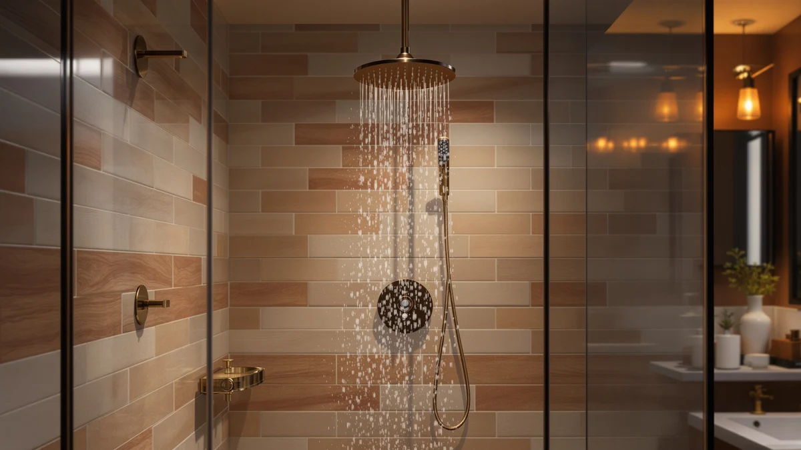

Best Shower Heads with Sprayer (2026)
Prices and picks verified as of September 2026. Independent, reader-supported reviews.


Quick Answer
The best shower heads with sprayer combine a detachable handheld wand with at least two or three spray settings, so you get a full-coverage rinse and a targeted sprayer mode for rinsing tile, kids, or pets. The Angle Simple High Flow Shower delivers that combination at the lowest price in this lineup, and Moen's Magnetix models add a magnetic dock for owners who want the wand to snap back into place instead of dangling from the hose.
Our pick: Angle Simple High Flow Shower, $18.99 Check Price on Amazon
Bottom line: our top pick is the Angle Simple High Flow Shower Head at $18.99. The best budget option is the ShowerMaxx Luxury Spa Series at $19.99.
Things to Know Before You Buy
- A sprayer function usually means a detachable handheld wand rather than a fixed shower head, so check whether you need wall mounting hardware and a longer hose before you buy.
- Magnetic docking, like Moen's Magnetix system, keeps the wand snapped to its base between uses. Standard clip brackets cost less but loosen over time.
- Multi-function heads that advertise 10 spray settings usually default to one high-pressure mode, with the rest built for massage, mist, or rinse-only use.
- Every head in this guide uses a chrome-plated ABS body. That keeps weight and price down but means it will not hold up to the same abuse as solid brass.
- Price in this category runs from about $19 to $44, and the jump mostly buys a name-brand warranty and a magnetic dock rather than dramatically different water flow.
Finding the best shower heads with sprayer usually starts with a specific annoyance: a fixed head that can't rinse the tub, a dog that needs a targeted spray, or a partner who wants a full rain setting while you want to hose off your feet. A handheld wand with a sprayer mode solves all three, and the seven models here cover that need at prices from $18.99 to $43.88.
We compared pricing, materials, spray-function counts, and verified owner review data for each product, rather than picking based on marketing copy or Amazon best-seller badges. Two Moen Engage Magnetix models anchor the higher end of this list with a magnetic docking wand, while the Angle Simple High Flow Shower and ShowerMaxx Luxury Spa Series 6 cover buyers who want a sprayer function without paying brand-name pricing.
None of these seven are identical. Some lean on a single high-flow spray, others pack in ten separate settings, and only the Moen pair include a magnetic dock instead of a plastic clip bracket. The comparisons below break down what separates them so you can match a pick to your bathroom instead of guessing from a product photo.
Why You Should Trust Us
Ilane Tall covers bathroom fixtures for Best Shower Heads, focusing on handheld and sprayer-equipped models where fit and hardware compatibility trip up more buyers than performance does. We are a research-based review site: we do not run a physical testing lab, and we do not claim to have installed or lived with these shower heads. Instead, we compare manufacturer specs, current Amazon pricing, and verified owner reviews so you can see where the real differences sit before you spend $20 to $44 on a new sprayer.
How We Picked
We started by pulling every shower head in our database that includes a detachable handheld wand or an explicit sprayer setting, then cut anything without a listed price or working product image. From there we prioritized models with at least one distinct feature beyond a plain rain setting: a magnetic dock, a high-flow rating, or a double-digit count of spray functions.
We also weighed verified review volume where Amazon provides it. Four of the seven picks here carry a rating backed by more than a thousand verified reviews, and we noted plainly when a model lacks that data rather than filling the gap with a guess.
How We Compared
We lined up specs side by side rather than treating each listing on its own. Price, spray-function count, docking hardware, and material all went into a single comparison table so the trade-offs would be visible in one place instead of buried in seven separate product pages.
For ratings and review counts, we pulled only what Amazon's listing reports for that specific ASIN. We did not average, round up, or borrow numbers from a similar model in the same product line. Where a listing had no rating data, we left it out of the comparison instead of estimating one.
Our Picks

Angle Simple High Flow Shower
What we like
- Lowest price in this roundup at $18.99
- Adjustable angle bracket lets you redirect the spray without replacing the arm
- High-flow design built for pressure rather than a crowded settings dial
Flaws but not dealbreakers
- No handheld wand, so it works as a fixed sprayer rather than a detachable one
- Amazon's listing does not publish a rating or review count for this ASIN
- Chrome-plated ABS body rather than solid metal
| Material | ABS + chrome plating |
| Size | — |
The Angle Simple High Flow Shower is the most straightforward pick in this group. It skips the multi-function dial that most of the other heads here use and instead puts its engineering into water pressure and an adjustable angle bracket, so you can tilt the spray toward your body instead of straight down. At $18.99, it is also the least expensive shower head with a sprayer function on this list.
Owners buy this one specifically to fix weak water pressure rather than to add spa-style settings. That focus is also its limitation: there is no detachable wand, so if you want a handheld sprayer to rinse the tub or a pet, the WHZeffect or Moen picks below will serve you better. Amazon's listing for this ASIN does not carry a published star rating, so weigh that gap in review history against the low price before you decide.

WHZeffect Handheld Shower Heads with
What we like
- Detachable handheld wand built specifically around a sprayer function
- Chrome-plated finish matches most standard shower fixtures
- Mid-range price at $29.89, between the budget and Moen-branded picks
Flaws but not dealbreakers
- No Amazon-published rating or review count for this ASIN
- Bracket clip rather than a magnetic dock, so the wand can work loose over time
- Lacks the double-digit function count of the 10-function models below
| Material | ABS + chrome plating |
| Size | — |
WHZeffect's handheld shower head is built around the sprayer function itself rather than treating it as one setting among many. The wand detaches from its wall bracket for direct rinsing, which is the feature buyers in this category ask for most often, ahead of a rain-style overhead spray.
At $29.89, it sits in the middle of this roundup's price range, above the Angle Simple and ShowerMaxx picks but below both Moen Engage Magnetix options. The bracket uses a standard clip rather than the magnetic dock Moen ships, so expect to tighten it occasionally as it loosens with daily use. Amazon does not list a star rating for this ASIN, so you are relying on the spec sheet rather than a review history.

Moen Engage Magnetix Shower Head
What we like
- Magnetix docking snaps the handheld wand back into place instead of relying on a clip
- Backed by Moen, an established plumbing brand with a standard warranty
- Detachable design doubles as a full handheld sprayer
Flaws but not dealbreakers
- Most expensive shower head in this roundup at $43.88
- Amazon's listing does not publish a rating or review count for this specific ASIN
- Premium price buys brand and hardware, not necessarily higher water flow
| Material | ABS + chrome plating |
| Size | Showerhead |
Moen's Engage Magnetix line replaces the plastic clip bracket most handheld shower heads use with a magnetic dock, so the wand snaps back into place instead of hanging from the hose or slipping loose. This version costs $43.88, the highest price among the seven heads compared here.
The core appeal is the docking hardware and the Moen name, which carries a standard manufacturer warranty that off-brand competitors in this list do not offer. Amazon's page for this specific ASIN does not show a published star rating, which is worth noting given the premium price. If you want the same Magnetix hardware with review data attached, the 3.5-inch chrome version further down this list carries a rating backed by more than 20,000 reviews.

Shower Head 10 Functions High
What we like
- Ten spray functions, including a high-pressure default setting
- Rated 4.5 out of 5 across 4,559 verified Amazon reviews, the most review-backed rating tier in this roundup
- Priced at $28.96, below both Moen options
Flaws but not dealbreakers
- No magnetic dock, so the mounting bracket is a standard clip
- Ten settings mean more dials to cycle through than a simple two-mode sprayer
- Chrome-plated ABS construction rather than metal
| Material | ABS + chrome plating |
| Size | — |
This 10-function shower head packs the most spray options of any product in this comparison, and it keeps a genuine high-pressure mode as its default rather than splitting flow evenly across every setting. At $28.96, it undercuts both Moen Engage Magnetix models while still carrying real review data behind it.
It holds a 4.5 out of 5 rating across 4,559 verified reviews on Amazon, tied for the largest review count in this group. That volume gives buyers more confidence than the unrated Angle Simple, WHZeffect, or base Moen Engage Magnetix listings above. The trade-off is a standard bracket instead of a magnetic dock, so if hands-free docking matters more to you than the number of spray modes, the Moen picks are worth the extra cost.

BESAQUO Shower Head 10 Functions
What we like
- Ten spray functions including a dedicated sprayer setting
- Rated 4.5 out of 5 across 4,559 verified reviews
- Chrome-plated finish matches standard bathroom fixtures
Flaws but not dealbreakers
- Priced at $34.99, about $6 more than the similarly specced 10-function pick above
- No magnetic docking hardware
- Ten settings add complexity if you only use one or two regularly
| Material | ABS + chrome plating |
| Size | — |
BESAQUO's 10-function shower head mirrors the spray-function count of the pick above it, with the same 4.5 out of 5 rating and 4,559 verified reviews behind it on Amazon. The difference between the two comes down to $6 in price and brand, since BESAQUO lists at $34.99 against $28.96 for the other 10-function model in this roundup.
When two listings carry identical review data, price usually decides it, and the earlier pick wins there. BESAQUO's version is worth a look if it happens to be in stock, on sale, or bundled with accessories the other listing skips, but on spec sheet and price alone, most buyers will get more value from the less expensive 10-function head above.

Moen Engage Magnetix Chrome 3.5-Inch
What we like
- Magnetix dock keeps the handheld wand snapped in place
- Rated 4.4 out of 5 across 20,953 verified reviews, by far the largest review count here
- 3.5-inch chrome head sized for a compact, low-profile install
Flaws but not dealbreakers
- Priced at $41.99, the second-highest price in this roundup
- Rating sits slightly below the 4.5 out of 5 held by the two 10-function heads
- 3.5-inch size is smaller than some buyers expect from a Moen shower head
| Material | ABS + chrome plating |
| Size | 3.5 inch |
This 3.5-inch Moen Engage Magnetix head carries the same magnetic docking system as the pricier Moen pick earlier in this guide, but backs it with 20,953 verified Amazon reviews, more than four times the review count of any other product compared here. That volume makes its 4.4 out of 5 rating one of the more reliable numbers in this roundup.
At $41.99, it costs less than the unrated Moen Engage Magnetix Shower Head above while offering the review history that model lacks, which makes it the stronger choice between Moen's two entries here if you want the Magnetix hardware. The 3.5-inch head size keeps the footprint compact, a detail worth checking against your existing shower arm before you buy.

ShowerMaxx Luxury Spa Series 6
What we like
- Priced at $19.99, a dollar more than the least expensive pick in this roundup
- Rated 4.4 out of 5 across 1,400 verified reviews
- 4.5-inch head with multiple spa-style spray settings
Flaws but not dealbreakers
- Review count is the smallest among the four rated products in this comparison
- No magnetic docking hardware
- Chrome-plated ABS body rather than metal
| Material | ABS + chrome plating |
| Size | 4.5 inch |
ShowerMaxx's Luxury Spa Series 6 undercuts nearly every other rated shower head in this roundup on price, at $19.99, while still carrying a 4.4 out of 5 rating from 1,400 verified Amazon reviews. That combination makes it the strongest budget option for buyers who still want review data behind their purchase, rather than betting on an unrated listing like the Angle Simple or WHZeffect picks above.
Its 1,400-review count is the smallest of the four rated products here, well behind the 20,953 reviews backing the Moen 3.5-inch Magnetix head or the 4,559 behind each 10-function pick. That gap does not erase the rating, but it does mean less data to draw on. For most bathrooms, a 4.5-inch head at $19.99 with a verified 4.4 rating is a reasonable trade against paying twice as much for Moen's Magnetix hardware.
Quick Comparison
| Product | Material | Price | Rating | Best for | Get it |
|---|---|---|---|---|---|
| Angle Simple High Flow Shower | ABS + chrome plating | $18.99 | 4 | Budget buyers who want higher water pressure | View on Amazon → |
| WHZeffect Handheld Shower Heads with | ABS + chrome plating | $29.89 | 4 | A true handheld sprayer wand | View on Amazon → |
| Moen Engage Magnetix Shower Head | ABS + chrome plating | $43.88 | 4 | Moen's magnetic dock, at any price | View on Amazon → |
| Shower Head 10 Functions High | ABS + chrome plating | $28.96 | 4.5 | The most spray functions with proven reviews | View on Amazon → |
| BESAQUO Shower Head 10 Functions | ABS + chrome plating | $34.99 | 4.5 | Same ten functions, different brand | View on Amazon → |
| Moen Engage Magnetix Chrome 3.5-Inch | ABS + chrome plating | $41.99 | 4.4 | Magnetic dock with the largest review history | View on Amazon → |
| ShowerMaxx Luxury Spa Series 6 | ABS + chrome plating | $19.99 | 4.4 | Budget buyers who still want a rated pick | View on Amazon → |
The Competition
We also looked at plain rainfall shower heads with no handheld wand or sprayer option, but left them out of this specific guide since they do not answer the sprayer-function question this list is built around. Readers who want that broader category can check our rain shower head guide instead.
We passed on several fixed, wall-mounted heads with a single spray setting. They tend to cost less than the picks above, but without a detachable wand or a second spray mode, they do not meet the bar for a shower head with a sprayer the way this guide defines it. We also excluded listings with no manufacturer-published price or with product photos that did not match the listed model, regardless of function count.
Across all seven, the best shower heads with sprayer for most bathrooms come down to two picks: the Angle Simple High Flow Shower for anyone shopping on price, and the Moen Engage Magnetix chrome 3.5-inch model for buyers willing to pay for a magnetic dock and a rating backed by tens of thousands of reviews.